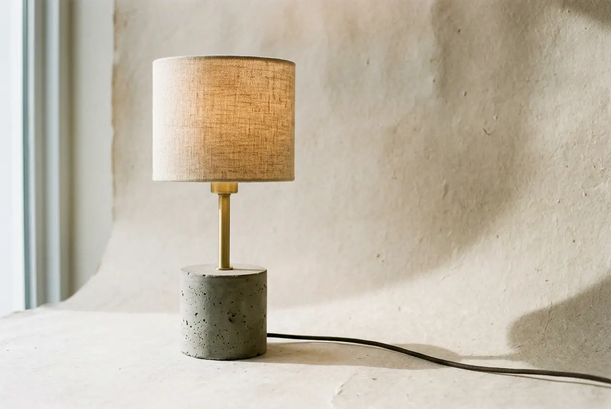

Object · The Ingot Table Lamp · Drag · Space for spin
§ 01 · The object
A single ingot, cast once.
The Ingot Table Lamp is cast by hand from ultra-fine white cement in an oiled polyurethane mould. Each piece is de-moulded after 36 hours, hand-finished, and signed on the underside by the caster on shift.
The brushed brass stem is turned in-house and pressed through a threaded insert cast directly into the concrete. There is no wood, no plastic, and no glue.
The linen shade is French flax, natural undyed, hand-sewn onto a brass ring. The bulb — a warm-white 3000K globe — is included with every order.
We make roughly twelve lamps a month. The waitlist runs three to four weeks.
§ 02 · Specifications
Four measurements.
Height
42 cm
to top of shade
Weight
4.8 kg
packaged 5.6 kg
Bulb
E26
3000K included
Cord
2.4 m
natural linen wrap